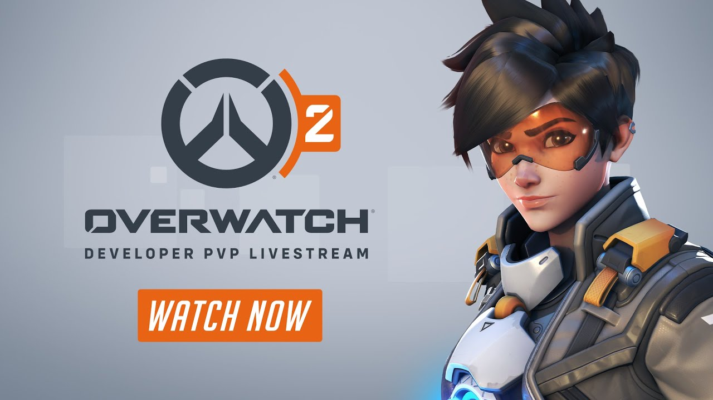
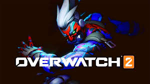

Overwatch 2 is a hero shooter, where players are split into two teams and select a "hero" from a roster of 35 characters.
Characters are organized into a "damage" class, responsible for offensive efforts; a "support" class, responsible for healing and buffing; and a "tank" class, responsible for the team's protection.
Each character has a unique set of skills, made up of active, passive, and ultimate abilities. Overwatch 2, like its predecessor, both primarily centers on player versus player (PvP) combat across several different modes and maps, and includes casual and ranked competitive matches. 2, the number of tank slots was reduced by one, bringing the total number of players per team to five.
According to game director Aaron Keller, developers hoped that losing a tank would speed up the gameplay as they believed The original Overwatch was designed for six-on-six team combat, with two of each class on a team. In Overwatch that the original six players scheme rendered gameplay slow.
It is also intended to ease the number of things players and spectators need to watch out for. New maps were designed to include more cover options to compensate for reduced tank-based protection.[1] Additionally, damage class heroes now have an increased movement speed, support heroes slowly regenerate, and tank heroes were redesigned so they could take on a more offensive role.
Heroes were visually refurbished to reflect the passage of time since the events of the first game. Overwatch 2 includes a ping system to direct the attention of teammates to specific points on the map. The game also introduces a new PvP mode named "Push", similar to tug of war, in which teams vie for control of a robot that pushes a team's payload to the opponent's side of the map. Along with being incorporated into Unranked and Competitive play, Push has become part of the standard map rotation of the Overwatch League, replacing the Assault mode.
Some existing gameplay modes may be dropped in Overwatch 2; former game director Jeff Kaplan has stated that some Assault maps (colloquially referred to as "2CP", meaning "two control points"), such as Paris and Horizon Lunar Colony, will likely not be available in Overwatch 2 as these have been deemed unbalanced in response to community feedback.

Other Assault maps, such as Hanamura and Temple of Anubis, may be available in the form of custom games or non-competitive arcade modes. The game features player versus environment (PvE) game modes. Similar to the special seasonal events, they will consist of four-player cooperative missions against non-playable characters and are available on a permanent as opposed to a seasonal basis.
In this mode, players can garner experience points for their hero and unlock new passive abilities called "talents", allowing them to influence how the hero plays.
There are least two PvE modes; a story-based mission mode, where players are limited to their hero selection in replaying missions based on Overwatch lore, and Hero missions which allow all heroes to be used in fending off waves of enemies at various locations.
Blizzard anticipates that Overwatch 2 will offer over 100 different PvE missions, utilizing new maps as well as existing multiplayer maps expanded out to include new areas, and adding in dynamic effects, such as day and night times as well as varying weather conditions.
Enemy types are expanded out from the Null Sector robots that were introduced in the original seasonal PvE events, adding in new types with unique behaviors. Overwatch 2 was released as free-to-play as opposed to the premium monetization model of its predecessor.
It also discontinued loot boxes in favor of a battle pass system which is offered on a seasonal basis and corresponds with the introduction of new maps and heroes.
The game also includes an in-game store where players can purchase cosmetics directly.
Blizzard stated that new heroes will be introduced as rewards on the free tier of the battle pass, and players who fail to make the associated tier will have other routes to obtain the hero for free in later seasons.
A Battle. net account is required to play Overwatch 2, regardless of platform.
Overwatch 2 features cross-progression, with in-game cosmetic items and progress being shared across PC and console versions.[10] Unlocked cosmetic items, in-game currency, and player statistics from any Overwatch profile linked to such an account are merged, and are available on all platforms.
Competitive skill ratings are separate, with console and PC ranks remaining independent of each other.
